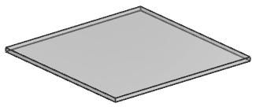
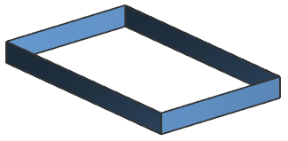
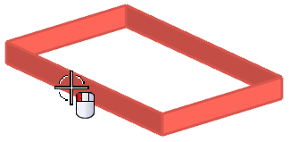
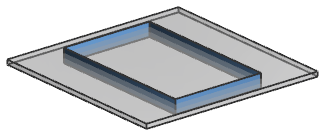

打开 wav3_reparent_glass。

打开 wav3_reparent_square_frame。

右击装配导航器背景并确保已打开 WAVE 模式。
右击 wav3_reparent_square_frame 并选择 WAVE→将几何体复制到部件。
阅读创建一个与位置无关的链接特征信息框中的信息，然后点击确定。
在选择部件对话框中，选择 wav3_reparent_glass.prt 然后点击确定。
将打开部件间复制对话框。
选择矩形框。

在部件间复制对话框中，点击确定以将几何体复制到玻璃部件文件中。
选择窗口→wav3_reparent_glass.prt。
矩形框架将与玻璃一起显示。
在部件导航器中，链接体显示为 square frame。
